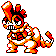
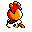

#161
Scrafty
DarkFighting
It nests in small caves and tunnels where it waits to lurk, then bite at prey
Base stats Total 373
HP65
Attack90
Defense115
Speed58
Special45
Details
- Species
- Hoodlum
- Height
- 3'07"
- Weight
- 66.1 lb
- Catch rate
- 90
- Base exp
- 171
- Growth
- Medium Fast
Level-up moves
LevelMoveType
StartTackleNormal
StartLeerNormal
StartLow KickFighting
StartCrunchDark
Lv 9Low KickFighting
Lv 12HeadbuttNormal
Lv 16CrunchDark
Lv 20SwiftNormal
Lv 31ScreechNormal
Lv 38Rock SlideRock
Lv 42Hi Jump KickFighting
Lv 45SubmissionFighting
Evolution
Evolves from Scraggy
Where to find
TM / HM
TM01 Mega PunchTM03 Swords DanceTM04 CrunchTM05 Mega KickTM06 ToxicTM08 Body SlamTM09 Take DownTM10 Double-EdgeTM15 Hyper BeamTM17 SubmissionTM18 CounterTM19 Seismic TossTM28 DigTM31 MimicTM32 Double TeamTM34 BideTM35 MetronomeTM40 Sludge BombTM44 RestTM48 Rock SlideTM50 SubstituteHM04 Strength